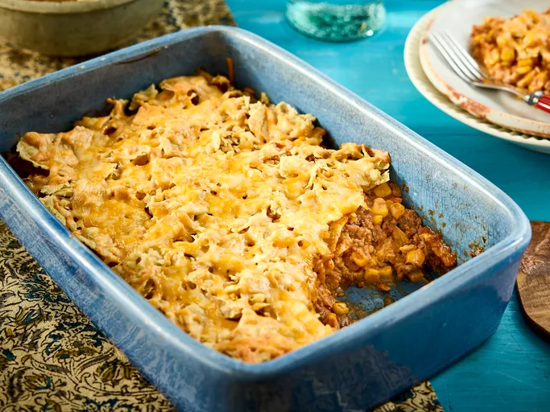

Home
NACHOS!
This nacho casserole is a simple meal to whip up in less than an hour that even the kids
are sure to love. Layers of seasoned ground beef, corn, and tortilla chips are buked under a layer of Colby cheese.

Ingredients
- 1 pound ground beef
- 1 1/2 cups chunky salsa
- 1 (10 ounce) can whole kernel corn, drained
- 3/4 cup creamy salad dressing (such as Miracle Whip)
- 1 teaspon chili powder
- 2 cups crushed tortilla chips
- 2 cups Colby cheese
Steps
- Gather the ingredients. Preheat the oven to 350 degrees F (175 degrees C).
- Cook ground beef in a large skillet over medium-high heat until browned and crumbly, 5 to 7 minutes. Remove from the heat and drain.
- Stir salsa, corn, salad dressing, and chili powder into the skillet until well combined.
- Layer 1/2 of the ground beef mixture in an ungreased 2-quart casserole dish; top with 1/2 of the tortilla chips and 1/2 of the cheese. Repeat layers once more.
- Bake, uncovered, in the preheated oven, until heated through and cheese is melted, about 20 minutes.